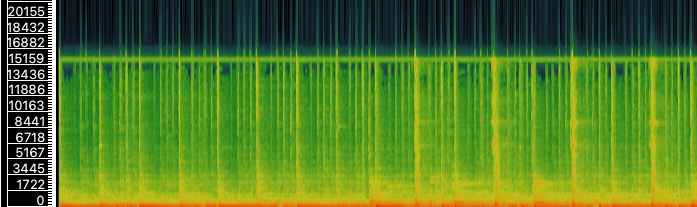
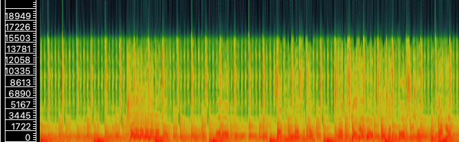
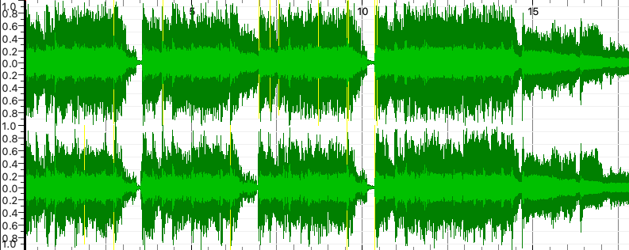

Week 8: Music as Sound
Task 1: Analyze Audio Tracks
For this task, I selected 3 audio tracls related to my theme:
Fade Into You by Mazzy Star
Mr.Jones by Counting Crows
Cryin' by Aerosmith
Fade Into You |
Mr.Jones |
Cryin' |
|
| Artist | Hope Sandoval, David Roback | Adam Duritz | Steven Tyler |
| Composer | David Roback | Adam Duritz, David Bryson | Steven Tyler, Joe Perry, Taylor Rhodes |
| Copyright | CC BY-NC-SA | CC BY-NC-SA | CC BY-NC-SA |
| Genre | Dream Pop | Alternative Rock | Blues Rock |
| Source | Soundcloud | Soundcloud | Soundcloud |
| File/Audio Format | mp3 | mp3 | mp3 |
| Number of Channels | 2 | 2 | 2 |
| Sample Rate | 44 100 | 44 100 | 44 100 |
| Bits per Second | 130 091 | 129 537 | 129 915 |
| Duration | 04:12 | 04:29 | 05:30 |
Task 2: Analysis of Tracks in SonicVisualizer
Fade Into You by Mazzy Star
Waveform

Spectrogram
Mr. Jones by Counting Crows
Waveform

Spectrogram
Cryin' by Aerosmith
Waveform
Spectrogram

Advantage of Time-Frequency Analysis over Waveform Analysis
A time-frequency analysis offers the advantage of displaying how energy is distributed across different frequency bands over time - information that is hidden in a waveform display. Waveforms only show amplitude changes and cannot distinguish whether a loud moment contains low-frequency bass or high-frequency harmonics. In contrast, spectrograms reveal the spectral structure of a track and make it possible to decipher production quality, dynamic range, and instrument density.
For example, in Fade Into You (Mazzy Star), the spectrogram shows a relatively soft and consistent mid-frequency band throughout the track. This reflects its spacey and atmospheric production, something not clearly seen in the waveform’s shape. Meanwhile, Cryin’ (Aerosmith) exhibits intense, continuous high-frequency energy and dense mid-range bands across the entire track, indicating heavy compression and “loudness-war” production. This doesn’t appear as evidently in the waveform alone, making time-frequency analysis more informative for greater understanding.